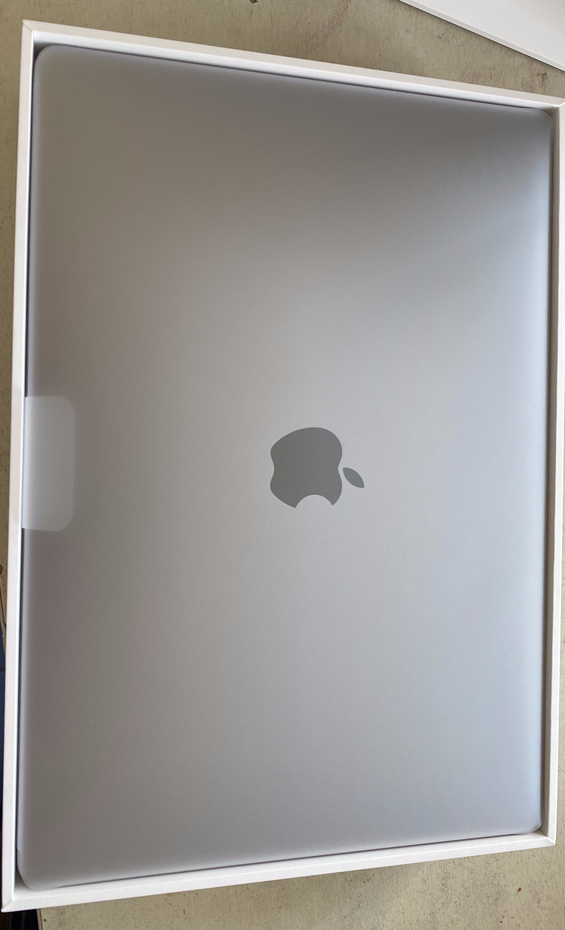
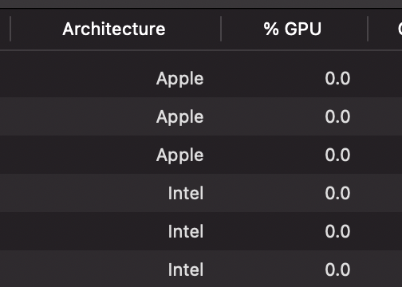

ARM M1 MacBook Air 开箱¶
购买¶
我是 11.12 的时候在 Apple Store 上下单的，选的是 MacBookAir，带 M1 芯片，8 核 CPU + 8 核 GPU，加了一些内存和硬盘。今天（11.19）的时候顺丰到货，比 Apple Store 上显示的预计到达时间 21-28 号要更早。另外，我也听朋友说现在一些线下的店也有货，也有朋友直接在京东上买到了 Mac mini，总之第一波 M1 的用户最近应该都可以拿到设备了。
现在这篇博客，就是在 ARM MBA 上编写的，使用的是 Intel 的 VSCode，毕竟 VSCode 的 ARM64 版不久后才正式发布。
开箱¶
从外观来看，一切都和 Intel MBA 一样，包装上也看不出区别，模具也是一样的。

进了系统才能看得出区别。预装的系统是 macOS Big Sur 11.0，之后手动更新到了目前最新的 11.0.1。
顺带 @FactorialN 同学提醒我在这里提一句：包装里有电源适配器，不太环保。
体验¶
ARM64¶
首先自然是传统艺能，证明一下确实是 Apple Silicon：
$ uname -a
Darwin macbookair.lan 20.1.0 Darwin Kernel Version 20.1.0: Sat Oct 31 00:07:10 PDT 2020; root:xnu-7195.50.7~2/RELEASE_ARM64_T8101 x86_64
啊对不起我用错了，上面是在 Rosetta 里面跑的 shell 看到的结果。实际是这样子的：
$ uname -a
Darwin macbookair.lan 20.1.0 Darwin Kernel Version 20.1.0: Sat Oct 31 00:07:10 PDT 2020; root:xnu-7195.50.7~2/RELEASE_ARM64_T8101 arm64
货真价实的 ARM64 内核，系统的很多 binary 也都是 Universal 的：
$ file /bin/bash
/bin/bash: Mach-O universal binary with 2 architectures: [x86_64:Mach-O 64-bit executable x86_64] [arm64e:Mach-O 64-bit executable arm64e]
/bin/bash (for architecture x86_64): Mach-O 64-bit executable x86_64
/bin/bash (for architecture arm64e): Mach-O 64-bit executable arm64e
Rosetta¶
接着，就是重头戏 Rosetta 了。第一次打开 Intel 的程序的时候，会弹出窗口安装 Rosetta，确定以后立马就装好了。接着常用的各种软件啥的，都没有什么问题。
唯一能看出区别的，就是在 Activity Monitor 可以看到架构的区别：

实际体验的时候，其实没有什么感觉。默认情况下，在 Terminal 下打开的是 ARM64 架构的，如果要切换的话，只需要：
这样就可以了。如果开了一个 x86_64 的 shell，在 shell 里面执行的命令就都是 x86_64 架构的了。
Homebrew¶
目前，Homebrew 的支持是这样子的，Intel 的 Homebrew 工作很正常，没有遇到任何问题。。ARM 的 Homebrew 目前还在进行移植，由于官方的 build farm 还没有支持 ARM，所以各种包都需要自己编译，试了几个常用的软件都没问题。
目前 Homebrew 推荐的方法是，在老地方 /usr/local/Homebrew 下面放 Intel 的 Homebrew，在 /opt/homebrew 下面放 ARM 的 Homebrew。虽然还是有很多警告，但目前来看基本使用都没有什么问题。Homebrew cask 也正常，毕竟基本就是一个下载器。
另外，试了一下用 ARM Homebrew 从源码编译 GCC，编译中途失败了。
其他软件¶
换到 ARM 上自然会想到，之前的那些软件还能不能跑。答案是，大多都可以，只是很多还是 Intel 版走翻译而已。
目前已经测试过正常使用的：VSCode、Google Chrome、Alacrity、iStat Menus、Alfred、Rectangle、Typora、Microsoft Office、Karabiner Elements、Jetbrains Toolbox、WeChat、CineBench、Dozer、Squirrel、Zoom、Tencent Meeting、Seafile、Skim、Mendeley、1 Password、Wireshark、Slack、iMazing、Office for Mac。
这些里面已经移植到 ARM64 的有 Alfred、iStat Menus、Karabiner Elements、Rectangle、Google Chrome、Slack、Typora、iMazing、Office for Mac、Zoom、VSCode Insiders。
这里有一部分是已经移植到 ARM64 的，有一些也很快就会移植过来。其中 iStat Menus 的电池健康显示有点 BUG，其他没发现问题（更新：已修复）。
另外，大家也知道 ARM Mac 很重要的一点是可以跑 iOS Apps，我们也确实跑了一些，不过都有一些问题：
- Doodle Jump：跑起来很正常，就是卡关了，别问为什么，没有加速度计，再怎么晃电脑也不会动
- Bilibili：部分内容可以加载出来，部分不可以，估计是什么组件没有配置好
- QQ Music：可以跑起来，但是在启动之后的引导页面，期望用户点一下屏幕，但怎么用鼠标点都没反应
- Weibo：毕竟正常，可以正常浏览啥都，就是 UI 有点错位，估计是因为显示窗口和实际都不大一样，小问题。
- Network Tools：很正常，各种网络信息都可以正常取出来。
- NFSee：没有 NFC 读卡功能，自然没法用。
- 彩云天气（ColorfulClouds Weather）：正常使用。
其他还有很多 App 还没有测试。
发热¶
大家也知道，这款 MBA 是没有风扇的。但我实际测试的过程中发现，确实不大需要。拿 stress 跑了一段时间 CPU 满载运行，也没感觉到电脑发热，只是在更新 macOS Big Sur 11.0.1 的时候稍微热了一点点，也只是一点点，距离烫手还有很长的距离。
续航方面目前来看也挺好的，捣鼓了一个下午，也没耗多少电。
性能测试¶
在不同平台上进行 OpenSSL 测试：
$ openssl speed -evp aes-128-cbc aes-256-cbc des-ede3 rsa2048 sha256
# M1 MacBookAir
OpenSSL 1.1.1j 16 Feb 2021
built on: Wed Feb 17 12:34:00 2021 UTC
options:bn(64,64) rc4(int) des(int) aes(partial) idea(int) blowfish(ptr)
compiler: clang -fPIC -arch arm64 -O3 -Wall -DL_ENDIAN -DOPENSSL_PIC -DOPENSSL_CPUID_OBJ -DOPENSSL_BN_ASM_MONT -DSHA1_ASM -DSHA256_ASM -DSHA512_ASM -DKECCAK1600_ASM -DVPAES_ASM -DECP_NISTZ256_ASM -DPOLY1305_ASM -D_REENTRANT -DNDEBUG
The 'numbers' are in 1000s of bytes per second processed.
type 16 bytes 64 bytes 256 bytes 1024 bytes 8192 bytes 16384 bytes
des ede3 30466.76k 30644.63k 30592.26k 30106.97k 29961.69k 29951.49k
aes-256 cbc 229863.42k 238671.82k 232654.34k 237194.70k 238092.29k 237791.91k
aes-128-cbc 1020384.58k 1427866.73k 1521123.84k 1558199.30k 1569978.99k 1566288.55k
sha256 378646.12k 1140355.52k 1894169.69k 2287211.18k 2445602.42k 2453209.09k
sign verify sign/s verify/s
rsa 2048 bits 0.000561s 0.000014s 1782.0 69645.9
# AMD EPYC 7742
OpenSSL 1.1.1d 10 Sep 2019
built on: Mon Dec 7 20:44:45 2020 UTC
options:bn(64,64) rc4(8x,int) des(int) aes(partial) blowfish(ptr)
compiler: gcc -fPIC -pthread -m64 -Wa,--noexecstack -Wall -Wa,--noexecstack -g -O2 -fdebug-prefix-map=/build/openssl-CKx7Fo/openssl-1.1.1d=. -fstack-protector-strong -Wformat -Werror=format-security -DOPENSSL_USE_NODELETE -DL_ENDIAN -DOPENSSL_PIC -DOPENSSL_CPUID_OBJ -DOPENSSL_IA32_SSE2 -DOPENSSL_BN_ASM_MONT -DOPENSSL_BN_ASM_MONT5 -DOPENSSL_BN_ASM_GF2m -DSHA1_ASM -DSHA256_ASM -DSHA512_ASM -DKECCAK1600_ASM -DRC4_ASM -DMD5_ASM -DAESNI_ASM -DVPAES_ASM -DGHASH_ASM -DECP_NISTZ256_ASM -DX25519_ASM -DPOLY1305_ASM -DNDEBUG -Wdate-time -D_FORTIFY_SOURCE=2
The 'numbers' are in 1000s of bytes per second processed.
type 16 bytes 64 bytes 256 bytes 1024 bytes 8192 bytes 16384 bytes
des ede3 28734.07k 28942.08k 28982.78k 29217.91k 29136.21k 29103.45k
aes-256 cbc 176843.84k 183040.83k 183156.82k 184132.61k 184464.73k 184642.22k
aes-128-cbc 602680.15k 1178207.32k 1239931.82k 1251810.30k 1258359.47k 1261316.78k
sha256 201482.20k 513504.00k 1075572.14k 1474850.82k 1648746.50k 1663030.61k
sign verify sign/s verify/s
rsa 2048 bits 0.000620s 0.000018s 1613.7 54756.4
# AMD EPYC 7282
OpenSSL 1.1.1d 10 Sep 2019
built on: Mon Apr 20 20:23:01 2020 UTC
options:bn(64,64) rc4(8x,int) des(int) aes(partial) blowfish(ptr)
compiler: gcc -fPIC -pthread -m64 -Wa,--noexecstack -Wall -Wa,--noexecstack -g -O2 -fdebug-prefix-map=/build/openssl-8Ocme2/openssl-1.1.1d=. -fstack-protector-strong -Wformat -Werror=format-security -DOPENSSL_USE_NODELETE -DL_ENDIAN -DOPENSSL_PIC -DOPENSSL_CPUID_OBJ -DOPENSSL_IA32_SSE2 -DOPENSSL_BN_ASM_MONT -DOPENSSL_BN_ASM_MONT5 -DOPENSSL_BN_ASM_GF2m -DSHA1_ASM -DSHA256_ASM -DSHA512_ASM -DKECCAK1600_ASM -DRC4_ASM -DMD5_ASM -DAESNI_ASM -DVPAES_ASM -DGHASH_ASM -DECP_NISTZ256_ASM -DX25519_ASM -DPOLY1305_ASM -DNDEBUG -Wdate-time -D_FORTIFY_SOURCE=2
The 'numbers' are in 1000s of bytes per second processed.
type 16 bytes 64 bytes 256 bytes 1024 bytes 8192 bytes 16384 bytes
des ede3 27052.31k 27392.85k 27455.57k 27569.49k 27503.27k 27514.20k
aes-256 cbc 158578.10k 168502.21k 172365.91k 173904.90k 174391.30k 174429.53k
aes-128-cbc 594506.35k 1111762.07k 1169014.02k 1184384.00k 1192793.56k 1189167.10k
sha256 194382.61k 487875.93k 1017121.56k 1390122.33k 1558735.53k 1572274.18k
sign verify sign/s verify/s
rsa 2048 bits 0.000655s 0.000019s 1526.8 52089.2
# AMD EPYC 7551
OpenSSL 1.1.1d 10 Sep 2019
built on: Tue Feb 16 22:08:43 2021 UTC
options:bn(64,64) rc4(8x,int) des(int) aes(partial) blowfish(ptr)
compiler: gcc -fPIC -pthread -m64 -Wa,--noexecstack -Wall -Wa,--noexecstack -g -O2 -fdebug-prefix-map=/build/openssl-m9Qnvk/openssl-1.1.1d=. -fstack-protector-strong -Wformat -Werror=format-security -DOPENSSL_USE_NODELETE -DL_ENDIAN -DOPENSSL_PIC -DOPENSSL_CPUID_OBJ -DOPENSSL_IA32_SSE2 -DOPENSSL_BN_ASM_MONT -DOPENSSL_BN_ASM_MONT5 -DOPENSSL_BN_ASM_GF2m -DSHA1_ASM -DSHA256_ASM -DSHA512_ASM -DKECCAK1600_ASM -DRC4_ASM -DMD5_ASM -DAESNI_ASM -DVPAES_ASM -DGHASH_ASM -DECP_NISTZ256_ASM -DX25519_ASM -DPOLY1305_ASM -DNDEBUG -Wdate-time -D_FORTIFY_SOURCE=2
The 'numbers' are in 1000s of bytes per second processed.
type 16 bytes 64 bytes 256 bytes 1024 bytes 8192 bytes 16384 bytes
des ede3 20850.88k 21260.78k 21315.84k 21368.49k 21321.05k 21392.04k
aes-256 cbc 122059.94k 125701.42k 126591.06k 126770.52k 127049.73k 126937.77k
aes-128-cbc 441625.34k 883733.48k 928208.21k 941480.96k 944889.86k 945307.65k
sha256 151161.13k 388304.60k 809272.15k 1106645.33k 1238966.27k 1249219.93k
sign verify sign/s verify/s
rsa 2048 bits 0.001096s 0.000033s 912.8 30284.7
# Intel Xeon E5-2699 v4 (Broadwell)
OpenSSL 1.0.2u 20 Dec 2019
built on: reproducible build, date unspecified
options:bn(64,64) rc4(16x,int) des(idx,cisc,16,int) aes(partial) idea(int) blowfish(idx)
compiler: gcc -I. -I.. -I../include -fPIC -DOPENSSL_PIC -DOPENSSL_THREADS -D_REENTRANT -DDSO_DLFCN -DHAVE_DLFCN_H -Wa,--noexecstack -m64 -DL_ENDIAN -O3 -Wall -DOPENSSL_IA32_SSE2 -DOPENSSL_BN_ASM_MONT -DOPENSSL_BN_ASM_MONT5 -DOPENSSL_BN_ASM_GF2m -DRC4_ASM -DSHA1_ASM -DSHA256_ASM -DSHA512_ASM -DMD5_ASM -DAES_ASM -DVPAES_ASM -DBSAES_ASM -DWHIRLPOOL_ASM -DGHASH_ASM -DECP_NISTZ256_ASM
The 'numbers' are in 1000s of bytes per second processed.
type 16 bytes 64 bytes 256 bytes 1024 bytes 8192 bytes
des ede3 29863.80k 30156.69k 30243.07k 30237.70k 30302.21k
aes-256 cbc 103491.45k 110240.94k 112029.95k 112400.38k 112833.88k
aes-128-cbc 734225.68k 788483.88k 802857.39k 805860.69k 807848.62k
sha256 82720.89k 184528.45k 342888.28k 425826.30k 457149.10k
sign verify sign/s verify/s
rsa 2048 bits 0.000573s 0.000017s 1745.5 60236.3
# IBM POWER8NVL
OpenSSL 1.1.1 11 Sep 2018
built on: Wed Feb 17 12:35:54 2021 UTC
options:bn(64,64) rc4(char) des(int) aes(partial) blowfish(ptr)
compiler: gcc -fPIC -pthread -m64 -Wa,--noexecstack -Wall -Wa,--noexecstack -g -O3 -fdebug-prefix-map=/build/openssl-avwOZX/openssl-1.1.1=. -fstack-protector-strong -Wformat -Werror=format-security -DOPENSSL_USE_NODELETE -DL_ENDIAN -DOPENSSL_PIC -DOPENSSL_CPUID_OBJ -DOPENSSL_BN_ASM_MONT -DSHA1_ASM -DSHA256_ASM -DSHA512_ASM -DKECCAK1600_ASM -DAES_ASM -DVPAES_ASM -DECP_NISTZ256_ASM -DX25519_ASM -DPOLY1305_ASM -DNDEBUG -Wdate-time -D_FORTIFY_SOURCE=2
The 'numbers' are in 1000s of bytes per second processed.
type 16 bytes 64 bytes 256 bytes 1024 bytes 8192 bytes 16384 bytes
des ede3 25120.65k 25479.70k 25570.13k 25604.10k 25616.38k 25613.65k
aes-256 cbc 79140.44k 82350.23k 83815.94k 84183.72k 84290.22k 84306.60k
aes-128-cbc 310027.28k 647168.64k 890896.81k 984001.19k 1014827.69k 1017096.87k
sha256 58347.98k 151006.68k 286465.28k 373490.69k 411044.52k 414012.76k
sign verify sign/s verify/s
rsa 2048 bits 0.001442s 0.000040s 693.5 25212.7
总结¶
总的来说，还是挺香的。不错的性能，没有风扇的喧闹，没有烫手的键盘。可能有少部分软件还不能正常运行，然后很多程序还需要 Rosetta 翻译，但目前来看兼容性还是挺不错的，并且这些应该明年就都适配地差不多了吧。